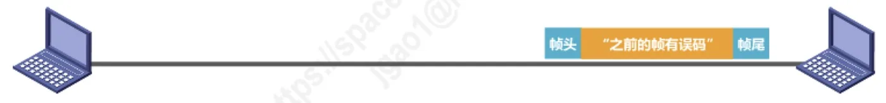
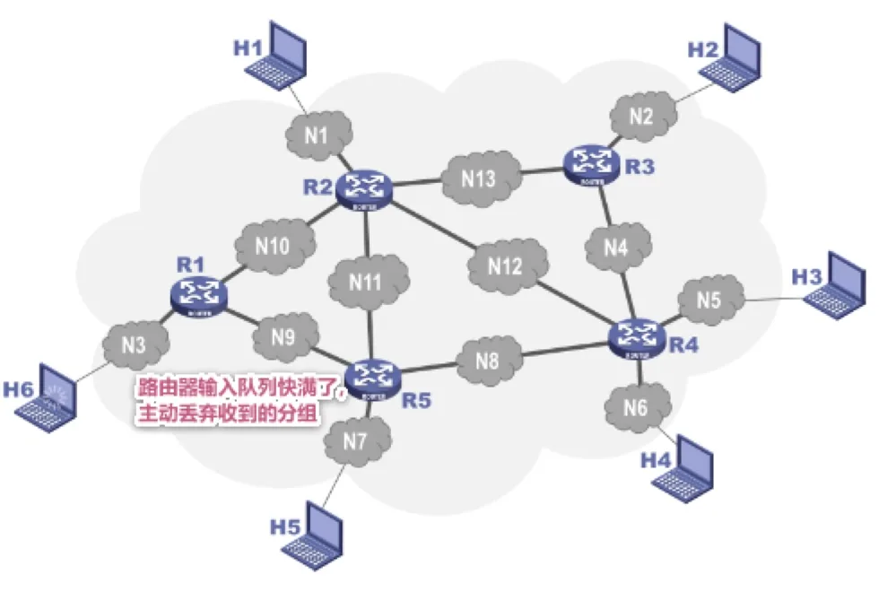
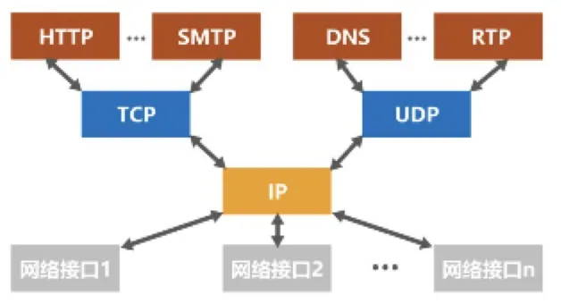

计算机通信与网络 · 第 3 章 数据链路层
3.4.1 可靠传输的基本概念
有了差错检测，接收方就能发现帧里出了错，但发现错误只是第一步：接下来是直接丢弃，还是想办法让发送方重发？这就引出了数据链路层向上层提供的两种服务。本节还要扩大视野——比特差错只是传输差错的一种，分组丢失、失序、重复同样会破坏可靠性，而可靠传输并非数据链路层的专利，各层都可以选择实现。
1. 检测出误码之后：两种服务
使用差错检测技术（例如循环冗余校验 CRC），接收方的数据链路层就可以通过帧尾 FCS 字段的值（检错码）检测出帧在传输过程中是否产生了误码（比特错误）。在此基础之上，数据链路层向上层提供的服务可以分成两种类型：
- 不可靠传输服务：仅仅丢弃有误码的帧，其他什么也不做；
- 可靠传输服务：想办法实现发送端发送什么，接收端就收到什么。接收方在检测出误码后不会默不作声，而是采取措施（例如通知发送方「之前的帧有误码」，让发送方重传）。

2. 有线链路与无线链路的取舍
提供可靠传输服务是有代价的，所以要不要用它，要看链路的质量：
- 一般情况下，有线链路的误码率比较低，为了减小开销，并不要求数据链路层向上提供可靠传输服务；即使出现了误码，可靠传输的问题也由其上层处理。
- 无线链路易受干扰，误码率比较高，因此要求数据链路层必须向上层提供可靠传输服务。
这也解释了为什么以太网的数据链路层不实现可靠传输，而 802.11 无线局域网的数据链路层必须实现可靠传输。
3. 传输差错不只是比特差错
比特差错只是传输差错中的一种。从整个计算机网络体系结构来看，传输差错还包括分组丢失、分组失序以及分组重复。
- 分组丢失：例如路由器的输入队列快满了，就会主动丢弃收到的分组，分组根本无法到达终点；
- 分组失序：各分组经过不同路径、不同时延到达，先后顺序可能与发送顺序不一致；
- 分组重复：由于重传等原因，接收方可能收到同一个分组的多个副本。

需要注意：分组丢失、分组失序以及分组重复这些传输差错，一般不会出现在数据链路层，而会出现在其上层——因为数据链路层只管一段链路，而分组要穿过许多段链路和许多路由器，队列溢出、路径变化等问题发生在网络层及以上的转发过程中。
4. 可靠传输服务的层次选择
正因如此，可靠传输服务并不仅局限于数据链路层，其他各层均可选择实现可靠传输。在 TCP/IP 体系结构中：
- TCP 向其上层提供面向连接的可靠传输服务；
- UDP 向其上层提供无连接、不可靠的传输服务；
- IP（网际层）向其上层提供无连接、不可靠的传输服务；
- 网络接口层则因链路而异：802.11 无线局域网要求数据链路层实现可靠传输，以太网不要求数据链路层实现可靠传输。

归根结底，可靠传输的实现比较复杂，开销也比较大，是否使用可靠传输取决于应用需求。接下来的三节就专门讨论数据链路层实现可靠传输的三种机制：停止-等待协议、回退 N 帧协议和选择重传协议。
本节小结
- 借助 CRC 等差错检测技术，接收方可以依据帧尾 FCS 字段检测出比特差错；此后数据链路层可向上提供不可靠传输服务（只丢弃出错帧）或可靠传输服务（做到发送端发什么、接收端就收到什么）；
- 有线链路误码率低，为减小开销一般不要求数据链路层提供可靠传输服务；无线链路易受干扰、误码率高，则要求数据链路层必须提供可靠传输服务；
- 比特差错只是传输差错的一种，此外还有分组丢失（如路由器输入队列满时主动丢弃分组）、分组失序和分组重复，这些差错一般出现在数据链路层的上层；
- 可靠传输并非数据链路层独有：TCP 提供面向连接的可靠传输服务，UDP 和 IP 都是无连接、不可靠的；是否使用可靠传输取决于应用需求，因为它的实现比较复杂、开销较大。